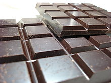

Types of Chocolates
Milk Chocolate

Milk chocolate is solid chocolate made with milk added in the form of milk powder. In 1875, Swiss confectioner Daniel Peter, in cooperation with his neighbour Henri Nestlé in Vevey, developed the first solid milk chocolate using condensed milk. The bar was named "Gala Peter", combining the Greek word for "milk" and his name.
Dark Chocolate
Dark chocolate, also known as "plain chocolate" or "black chocolate", is produced using higher percentages of cocoa, traditionally with cocoa butter instead of milk, but there are also dark milk chocolates and many degrees of hybrids. Dark chocolate can be eaten as is, or used in cooking, for which thicker, baking bars, usually with high cocoa percentages ranging from 70% to 100% are sold.
White Chocolate

White chocolate is a chocolate derivative. It commonly consists of cocoa butter, sugar and milk solids and is characterized by a pale yellow or ivory appearance. The melting point of cocoa butter, its primary cocoa bean component, is high enough to keep white chocolate solid at room temperature. It commonly consists of cocoa butter, sugar and milk solids, is characterized by pale yellow appearance.
Organic Chocolate
Organic chocolate is chocolate which has been certified organic. It was a growing sector in the global chocolate industry. organic chocolate is a socially-desirable product for some consumers. The Hershey Company, have begun to produce organic chocolate. We use 85% cocoa solids for an intense hit of cocoa. It's balanced with just enough sugar and choco. Organic Chocolate is more expensive than regular.
Raw Chocolate

Raw chocolate is chocolate which is produced in a raw or minimally-processed form. It is made from unroasted (sun-dried) cacao beans and cold pressed cacao butter. A variety of crystalline and liquid sweeteners may be used, including: coconut sugar, coconut nectar, xylitol, agave nectar, maple syrup, and stevia. Cane sugar and other highly processed sugars are not used, but this is no evidence of being less harmful.
Modeling Chocolate
Modeling chocolate, also called chocolate leather, plastic chocolate or candy clay, is a chocolate paste made by melting chocolate and combining it with corn syrup, glucose syrup, or golden syrup. Primarily used by upscale cakemakers and pâtisseries to add decoration to cakes and pastries, modeling chocolate is formed into a variety of shapes and structures that cannot be easily accomplished with other softer materials.
Recipes
Chocolate Covered Cherry Cookies II "Delicious! Easy to make, too. Took barely 30 minutes to do everything from mixing the batter to making the frosting to baking."
Chocolate-Frangelico Fondue This creamy chocolate fondue will coat best if the banana and strawberries are briefly chilled before serving. You can substitute your favorite liqueur for the Frangeli.
Chocolate Shortbread This rich chocolate shortbread recipe is easy to prepare and keeps in an airtight container. Because this mixture is already dark, it's hard to tell when the shortbread browns. Check your oven temperature using an oven thermometer, and bake just until the shortbread is set.
homemade chocolate There are many methods to make this chocolate recipe but the one which works great for me is the sugar syrup method. The secret to making that perfect homemade chocolate that will give any store bought chocolate a run for its money is preparing the sugar syrup to one string consistency.
Related Posts:
social media for chocolate stores
Orange marmalade, bitter chocolate